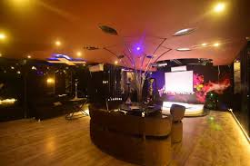
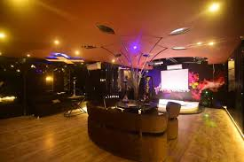

Gorakhpur has been the land of ancient glory and medieval mysticism. It is endowed with magnificent monuments / temples of attraction. The ancient Gorakhpur, in addition to modern, comprised the districts of Basti, Deoria, Azamgarh and parts of Nepal tarai. These region, which may be called as Gorakhpur Janpad, had been an important centre of Aryan culture and civilization.